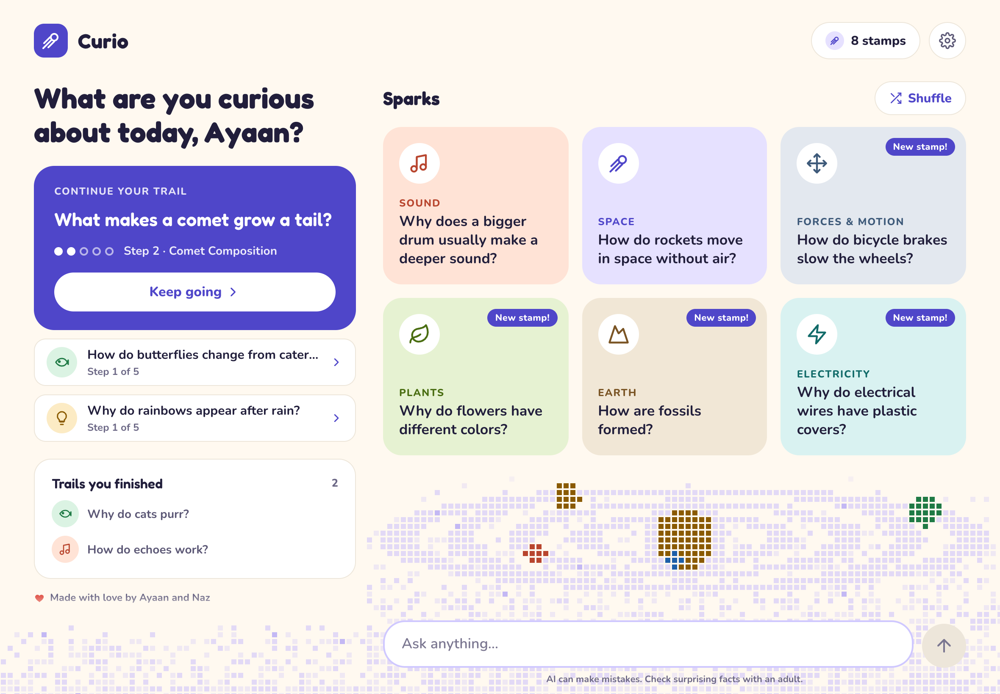
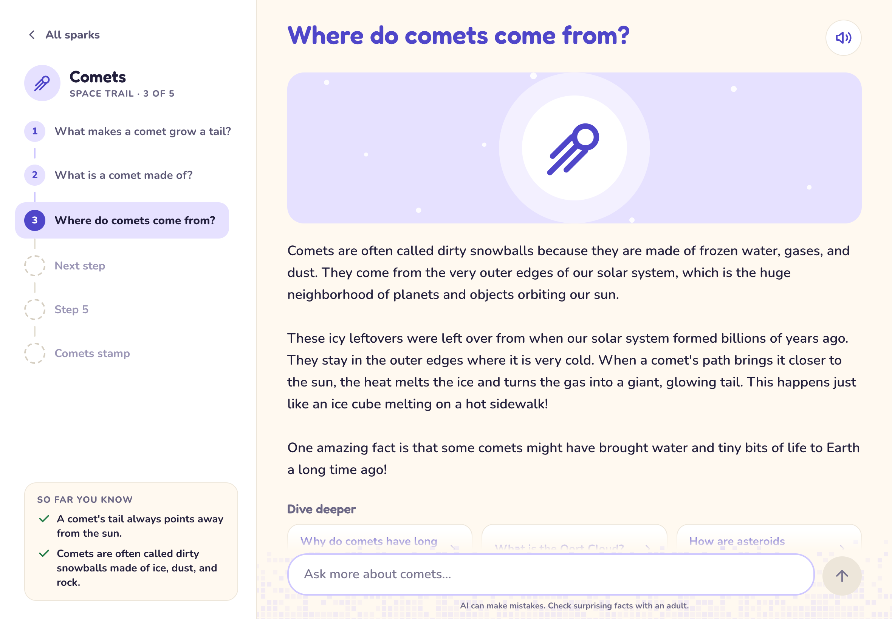
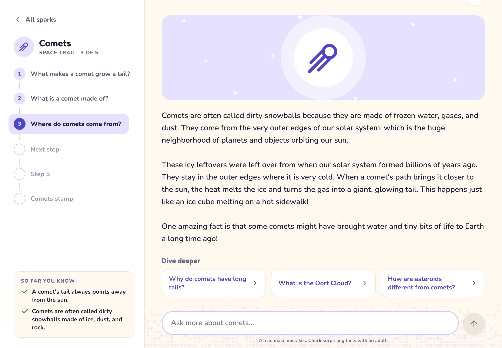
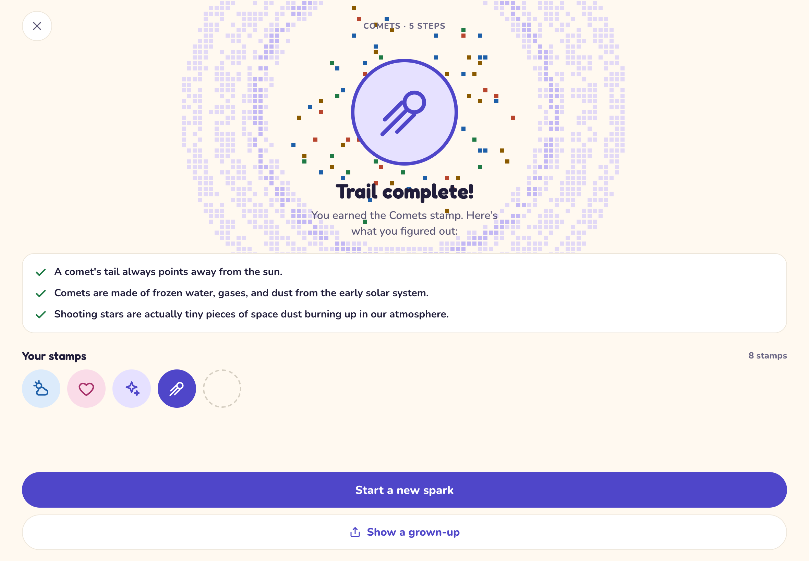
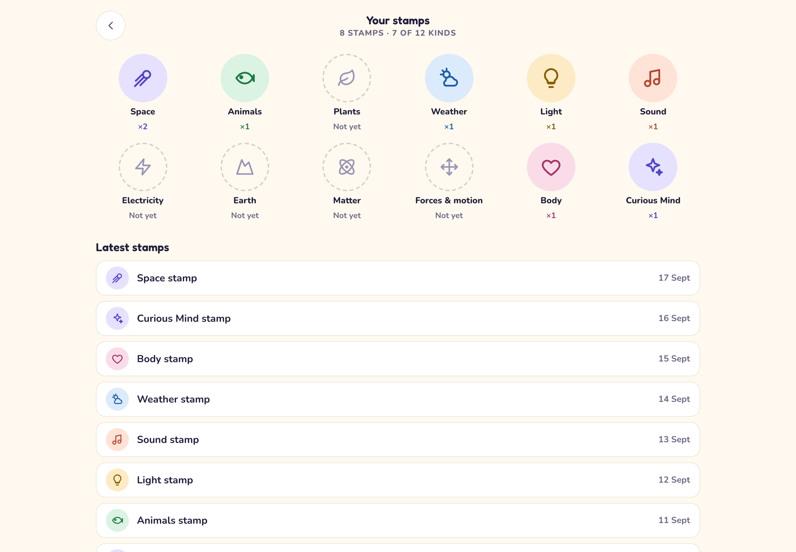
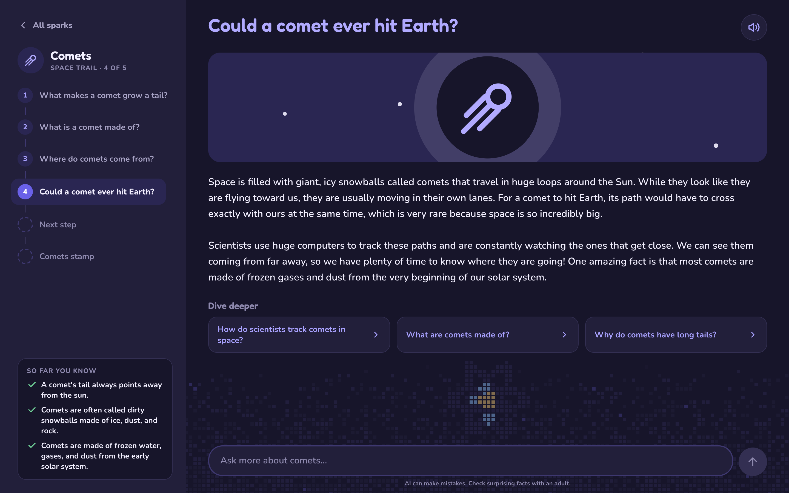
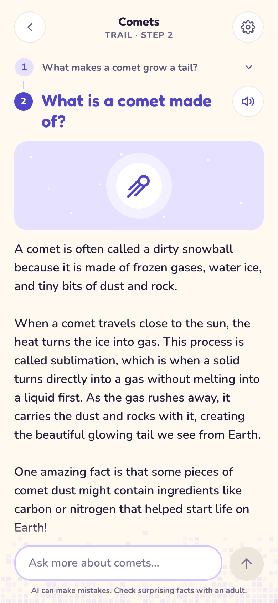

Every kid has
big questions.
Curio
Your science explorer.
Tap a spark, or ask anything.Sparks are starter questions from 11 science topics.

Clear, exciting answers in seconds.Written for kids by an AI tutor, with a picture and Read aloud.
Every answer opens three new questions.Pick one to dive deeper, one step at a time.


Five steps make a trail.
Finish the trail, earn a stamp.And see everything you figured out.

Collect all 12 kinds of stamp.New sparks point you to topics you haven’t explored yet.

On iPad, iPhone and the web.


Runs on our own computer.
No ads. No accounts.
Your name and stamps stay on your device.
Curio
Big questions. Everyday discoveries.
Made with love by Ayaan and Naz